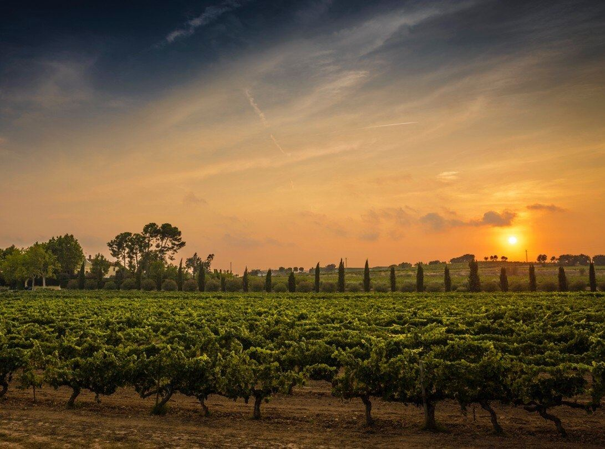

RED
Family-owned Penedès winery founded in 1870, one of Spain's best-known wineries internationally, with vineyards in several Catalan designations and other Spanish regions.

Torres's modern history begins in 1870, when Jaime Torres Vendrell, having made his fortune in Cuba, returned to Vilafranca del Penedès and founded a winery together with his brother. The company has remained in the family's hands ever since, with successive generations at the helm.
In the second half of the 20th century, Miguel A. Torres, trained in France, promoted the planting of international varieties such as Cabernet Sauvignon and Chardonnay in Penedès alongside native grapes. From that period come wines such as Mas La Plana, a single-estate Cabernet Sauvignon that gave the winery international standing. The family later extended its presence to other Catalan areas —Priorat, Conca de Barberà, Costers del Segre— and to regions such as Rioja and Ribera del Duero, as well as projects in Chile and California.
Torres is known for its programme to recover ancestral Catalan varieties that had almost vanished after phylloxera, and for its commitment to tackling climate change, including the search for higher-altitude vineyards. Its range spans widely distributed wines, such as Sangre de Toro and Viña Esmeralda, through to limited-production single-estate labels.
The winery has a visitor centre in Penedès offering tours and tastings; booking in advance is advisable.